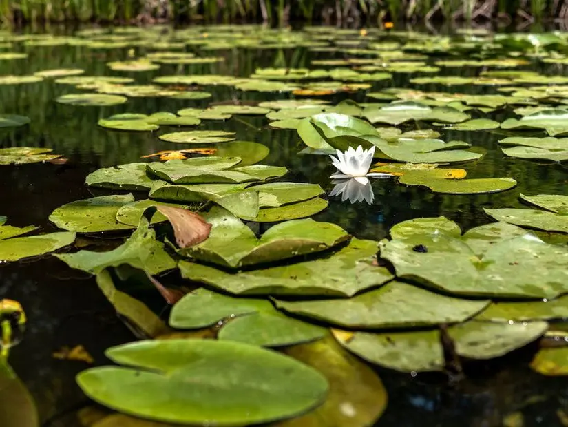
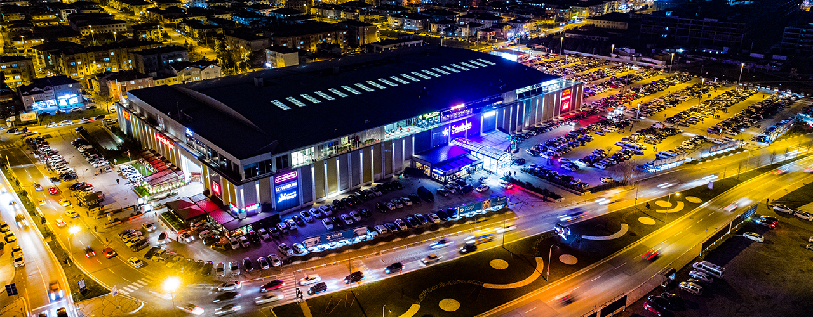

Marmaranın Doğasıyla Büyüleyen Şehri: SAKARYA
Sakaryanın Tarihçesi
Osmanlı Dönemi: Sakarya, 14. yüzyılda Osmanlı topraklarına katıldı. Özellikle Orhan Gazi döneminde Osmanlı hâkimiyetine geçti. Osmanlı döneminde önemli bir tarım ve ticaret merkezi olarak gelişti.
Cumhuriyet Dönemi: Sakarya Meydan Muharebesi (1921), Kurtuluş Savaşı'nın dönüm noktalarından biridir, ancak bu muharebe günümüzdeki Sakarya il sınırları dışında, Ankara'ya daha yakın bir bölgede gerçekleşmiştir. Adını Sakarya Nehri'nden almıştır. 1954 yılında Adapazarı merkez olmak üzere il statüsü kazanmıştır.
Günümüz: Sanayi, tarım ve ulaşım açısından Türkiye'nin önemli şehirlerinden biridir. 1999 depreminden büyük ölçüde etkilenmiştir ancak sonrasında yeniden yapılandırılmıştır.
←
→
Sakarya Hakkında Bilgiler
Coğrafya ve İklim
Yüzölçümü: 4.823 km²
Komşuları: Doğuda Düzce, güneydoğuda Bolu, güneyde Bilecik, batıda Kocaeli, kuzeyde ise Karadeniz ile çevrilidir.
İklim: Kuzeyde Karadeniz iklimi, batı ve güneyde Marmara iklimi etkili olup, kışlar ılık ve yağışlı, yazlar ise sıcak ve nemlidir.
Nüfus ve Demografi
2024 Nüfusu: 1.110.735 kişi (erkek: 556.928, kadın: 553.807)
Nüfus Yoğunluğu: 228 kişi/km²
Ekonomi ve Sanayi
Sakarya, sanayi ve tarımda güçlü bir ekonomiye sahiptir:
Sanayi: Otomotiv (Toyota, Otokar, TürkTraktör), makine, tekstil ve gıda sektörlerinde faaliyet gösteren büyük firmalar bulunur.
Tarım: Fındık, mısır, buğday, patates, ayva, şeftali gibi ürünlerin üretimi yaygındır.
Organize Sanayi Bölgeleri: 5 OSB, 100.000'den fazla istihdam sağlar ve yeni OSB yatırımları devam etmektedir.
Sakaryada Gezilecek Yerler (8)
1.Poyrazlar Gölü
Kent merkezinin 8 km doğusunda bulunan ve Sakarya Nehrinin kenarında yer alan Poyrazlar Gölü alüvyal bir set gölü olarak biliniyor.
Sazlıklarla kaplı olan kısımları ve etrafında bulunan orman eşsiz manzaralar sunuyor.
Orman Bölge Müdürlüğü tarafından günübirlik ziyaretçiler için mesire yeri olarak düzenlenmiş olan çevresi özel sektör tarafından işletiliyor.
Yeme içme ihtiyaçlarınızı karşılayabileceğiniz göl etrafında bulunan işletmelerin yanı sıra, Poyrazlar Gölü’nün pek çok farklı kuş türüne ev sahipliği yaptığını da söylemek gerekiyor.
2.Sapanca Gölü
Gezginler tarafından Sakarya’da mutlaka görülmesi gereken yerler listesinin başında bulunan bu göl, Türkiye’nin en güzel gollerinden biri olarak biliniyor.
Yerli ve yabancı turistler tarafından yoğun bir ilgi gören Sapanca Gölü, bünyesinde barındırdığı çeşitli güzellikleri ile görenleri büyülemeyi başarıyor.
Turistik değerlere sahip bir şehir olması sebebiyle dikkat çeken Sakarya, Sapanca Gölü gibi oldukça önemli bir yapıya sahiplik yapıyor.
Eşsiz bir manzaraya sahip olan ve ziyaretçiler tarafından yoğun bir ilgi gören Sapanca Gölü, stabil olan suyu ile hem yaz hem de kış aylarında ziyaret ediliyor.
Sapanca Gölünde vakit geçirirken kamp yapabilir, fotoğraf çekebilir, balık avlama etkinliklerine katılabilirsiniz.
öl Sakarya merkezde yalnızca 20 kilometre uzaklıkta yer alıyor.
Bu gölün en büyük özelliği ise bungalov evleriyle ünlü olması. Özellikle bölgede konaklamak istiyorsanız bungalov deneyimi yaşayabilirsiniz.
3.Acarlar Longozu
1500 metrekareden daha geniş bir alan üzerinde bulunan Acarlar Longozu, Türkiye’nin en büyük longoz ormanı olma özelliği taşıyor.
Eşsiz bir görüntü sunuyor olmasının yanı sıra birinci derecede doğal sit alanı olması sebebiyle de dikkat çeken Acarlar Longozu özellikle bahar aylarında adeta akına uğruyor.
Muhteşem nilüfer görüntüleri sunan Acarlar Longozu turistler tarafından yoğun bir ilgi görüyor.
Longoz bitki türlerinin pek çoğuna ev sahipliği yapıyor olmasının yanı sıra kuş gözlem için en ideal noktalardan biri olarak biliniyor.
Mutlaka ziyaret etmeniz gereken longoza şehir merkezinden toplu taşıma araçları veya şahsi aracınız ile ulaşabilirsiniz.
Longoz civarında yeme içme ihtiyaçlarınızı karşılayabileceğiniz çeşitli işletmeler de bulunuyor.

4.Doğançay Şelalesi
Sapanca’da Gezilecek Yerlerlistesinin başında gelen Doğançay Şelalesi deniz seviyesinden 600 metre yüksekte bulunuyor.
Şelaleye giden yolda yürüyüş parkurları bulunuyor.
Doğayla iç içe ve keyifli bir gün geçirmek isteyenlerin tercihi olmayı başaran Doğançay Şelalesi, ziyaretçilerine huzurlu bir ambiyans sunuyor.
Doğançay Şelalesi’ne ulaşmak için şehir içi ulaşım araçlarını kullanabilir veya şahsi arabanız ile ulaşım sağlayabilirsiniz.
Şehir merkezine yalnızca 25 km mesafede yer alan şelale 600 metre yükseklikte bulunuyor.
Tamamen asfalt olan yolda kolaylıkla ulaşım sağlayabilirsiniz ancak ulaşım için son 2 km’yi toprak yol ile yürümeniz gerekir.
Doğançay Şelalesi’nin Doğançay Köyünde yer alıyor, dolayısıyla bu köye giden toplu taşıma araçlarıyla da ulaşım sağlayabilirsiniz.
5.Justiniaus Köprüsü (Beşköprü)
Sakarya şehrinde yer alan Justiniaus Köprüsü (Beşköprü) şehrin tarihi açıdan en dikkat çekici yapılarından biri.
Roma döneminde inşa edildiği düşünülen yapının tarihi değerinin yanı sıra manzara açısından da unutulmaz bir yapı olduğunu söylemek gerekiyor.
Doğal güzelliklerin başında gelen ve Sakarya seyahatiniz esnasında mutlaka ziyaret etmeniz gereken Justiniaus Köprüsü (Beşköprü) özellikle gün batımında bulunanlara unutulmaz manzaralar sunmayı başarıyor.
İstanbul ile Anadolu arasında bağlantı sağlamak amacıyla Geç Roma Döneminde inşa edilen Justiniaus Köprüsü 365 metre uzunluğunda ve 12 kemere sahip.
Şehir merkezinde bulunuyor olması sebebiyle kolay bir şekilde ziyaretinizi gerçekleştirebilirsiniz.
6.Uzun Çarşı
Osmanlı döneminden kalan en eski ve en köklü yapıların başında Uzun Çarşı yer alıyor.
Pek çok farklı esnaf ile farklı kültürleri bir araya getirmeyi başaran Uzun Çarşı günümüzde ana ticaret merkezi konumunda bulunuyor.
Bunun yanı sıra Sakarya’nın meşhur yemekleri hakkında da hizmet veren pek çok farklı restorana Uzun Çarşı ev sahipliği yapıyor.
Şehir merkezine yakın konumda bulunuyor olması sebebiyle hem turistler hem de yöre halkı tarafından en çok tercih edilen yerlerden biri olarak biliniyor.
7.Serdivan
Adapazarı merkezine sadece 6 kilometre uzaklıkta yer alan ve keyifli günübirlik geziler yapabileceğin Serdivan, hem doğal güzellikleri hem de bilim merkezi ve tarihi hazineleri ile ilgi çekiyor.
Sakarya Gölü kenarında 8,5 kilometrelik kıyı şeridine sahip küçük bir ilçe olan Serdivan, son yıllarda deniz seviyesinden 250 metre yükseklikteki Taraklı Karagöl Yaylası'nda benzersiz doğal güzellikler üstünde düzenlenen yamaç paraşütü etkinlikleriyle de yerli ve yabancı turistleri kendine çekiyor.
Çocuklu ailelerin mutlaka ziyaret etmesini önerdiğimiz Planetaryum (Gezegen Evi) ise her yaştan çocuklara ve gençlere bilim ile teknolojiyi eğlenceli bir şekilde öğretmeyi amaçlayan pek çok sergi, atölye ve etkinliğe sahip.
Yemyeşil yaylalardan küçük göllere, derelere ve çam ormanlarına kadar sıcak yaz sıcaklarında keyifli doğa gezileri yapabileceğin birçok sevilen alana sahip.

8.Maden Deresi
Sakarya’nın Karadeniz kıyısında yer alan ve Kocaeli ile Karasu illeri arasında konumlanan Maden Deresi, kaynağını Çam Dağı’ndan alıyor.
Kuzeye doğru akışa geçen ve 30 kilometrelik uzunluğu ile tabiat parkı olarak değerlendirilen Maden Deresi gibi tarihin en eski zamanları tanıklık etmiş olması sebebiyle de dikkat çekiyor.
Fiziksel olarak parçalanarak çakıl taşlarının meydana gelmesine yol açan Maden Deresi, eşsiz manzaralar ile görenleri büyülemeyi başarıyor.
Maden Deresi etrafında yeme içme ihtiyaçlarınızı karşılayabileceğiniz kafe ve restoranlar da bulunuyor.
Bunun yanı sıra Maden Deresi’nin orman açısından da oldukça zengin olduğunu ve meşe, çınar, gürgen gibi pek çok ağaca ev sahipliği yaptığını da söylemek gerekiyor.
Şehir içerisinden toplu taşıma araçları ya da şahsi aracınız ile ulaşabileceğiniz Maden Deresi, doğayla iç içe ve huzurlu bir gün geçirmek için en ideal noktalardan birisi olmayı da başarıyor.